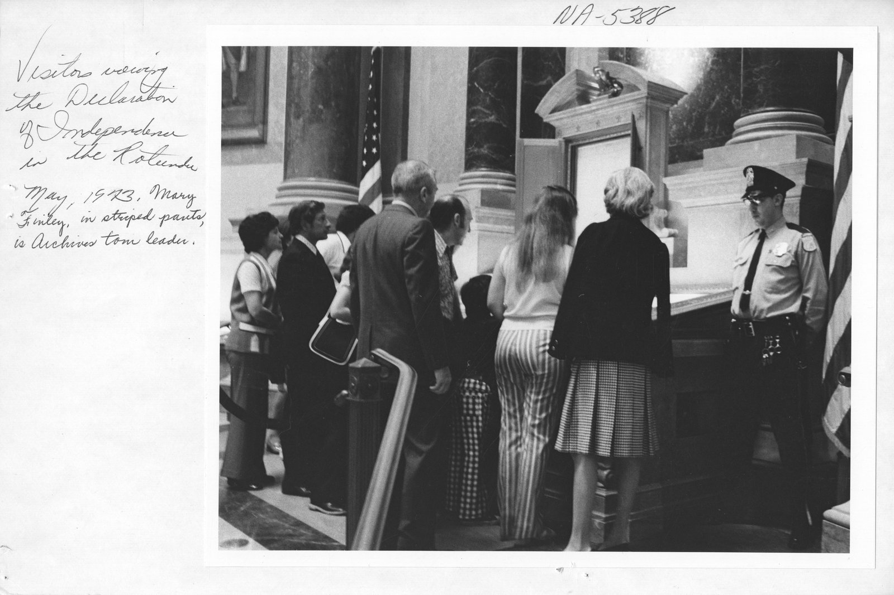
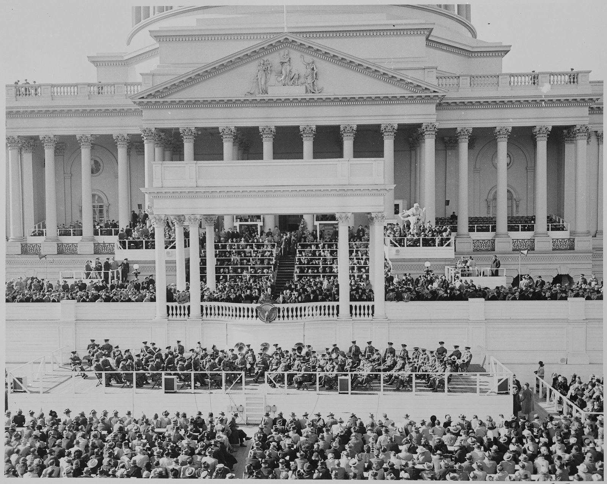

[250년 미국이야기②] 석유로 선 미국 250년, 다섯 축이 한자리에서 꺾인다
반란으로 태어나 석유와 달러를 딛고 유일 초강대국에 오른 미국 250년
에너지·산업혁명·사회구성체·국제질서·패권, 다섯 자가 2008년 무렵부터 함께 꺾인다
이란 전쟁 9개월째 호르무즈 위기, 석유에서 전기로 넘어가는 고비에 선 패권
AI경제저널=김갑봉 기자 | 다극화 시대를 말하기 전에, 미국이 어떻게 유일 초강대국이 됐는지부터 되짚는다. 필자는 패권이 대개 그 시대의 에너지를 쥔 자에게 갔다고 본다.
19세기 석탄이 영국을 세계의 주인으로 세웠다면 20세기 석유는 그 자리를 미국에 넘겼다. 1776년 반란으로 태어난 나라가 250년 만에 지구를 호령하기까지, 그 상승곡선의 밑에는 석유가 있었다.
이 글은 그 250년을 에너지와 산업혁명, 사회구성체, 국제질서, 그리고 패권이라는 자 다섯 개로 잰다. 아래 표는 이 연재 전체의 지도로, 글을 읽다가 길을 잃으면 이 표로 돌아오면 된다.
시기를 가른 선과 칸마다 적은 말은 어느 기관의 분류가 아니라 필자가 세운 구분이다. 산업혁명의 차수도 통설이나 뒤에 인용하는 고든의 구분과 달리 필자가 편의상 나눈 것이다.
| 시기 | 에너지 | 산업혁명 | 사회구성체 | 국제질서 | 패권 |
|---|---|---|---|---|---|
| ~18세기 중반 | 인력·가축 | 없음 | 봉건영주제 | 제국 병립 | 중화와 유럽 열강 |
| 18세기 후반~ | 석탄 | 1·2차 | 자본주의 | 제국주의 각축 | 영국 |
| 1914~45 | 석탄→석유 | 2차 | 수정자본주의 | 세계대전 | 영국에서 미국으로 |
| 1945~91 | 석유 | 3차 | 자본주의 대 사회주의 | 냉전 | 미국과 소련 |
| 1991~2008 | 석유 | 3차 | 신자유주의 | 탈냉전 | 미국 일극 |
| 2008~ | 석유→전기 | 4차 | 다양성의 시대 | 신냉전과 다극화 | 미국의 상대적 쇠퇴 |
표의 마지막 줄을 눈여겨보기 바란다. 자 다섯 개가 지금 한자리에서 함께 꺾이고 있다는 것, 이 동시성이 이 글이 세우는 가설이고 이 연재가 말하려는 바다.
1776, 반란으로 태어난 나라
미국은 반란으로 시작했다. 1776년 7월 4일 열세 개 식민지가 영국에 독립을 선언했고, 왕의 나라에서 떨어져 나와 스스로 다스리는 나라를 세우겠다고 밝혔다. 미국은 1778년 프랑스와 동맹을 맺어 도움을 받았고, 1775년 시작된 8년 전쟁 끝에 독립을 얻었다.

전쟁에서 이긴 미국은 1787년 필라델피아에서 연방헌법을 만들어 나라의 뼈대를 세웠다. 삼권분립과 연방제, 견제와 균형을 담은 이 설계가 240년 가까이 지난 오늘까지 이어진다.
왕도 귀족도 없이 시민이 대표를 뽑아 다스리는 공화국이라는 실험이 이 대륙에서 시작됐다. 다만 그 자유는 처음부터 노예와 여성, 원주민에게 닫힌 자유였다.
피로 이룬 통합, 남북전쟁
나라는 건국 뒤에도 노예제를 두고 안에서 갈라섰고, 북부의 공업과 남부의 노예제 농업이 부딪쳤다. 미 인구조사국 집계로 1860년 미국 인구는 3144만3321명이었고 그 가운데 395만3760명이 노예였다. 여덟 명 가운데 한 명이 노예였다.
1860년 말부터 남부 주들이 연방을 떠났고 1861년 4월 남북전쟁이 터졌다. 4년 전쟁에서 숨진 군인은 오래 62만명으로 꼽혔다. 역사학자 J. 데이비드 해커는 2011년 인구조사 자료로 다시 세어 75만명 안팎으로 올려 잡았다. 미국이 치른 어떤 전쟁보다 많은 목숨을 앗았다.
1863년 링컨 대통령이 반란 지역 노예 해방을 선언했고, 1865년 북부가 이겼다. 1865년 수정헌법 13조가 노예제를 없앴으나 통합은 반쪽에 그쳤다. 전쟁 뒤 재건은 좌절됐고 해방된 흑인은 다시 차별의 사슬에 묶였다. 오늘까지 미국을 흔드는 인종 문제의 뿌리 하나가 여기서 자랐다.
대륙을 삼킨 팽창, 그리고 석유
미국은 서쪽으로 뻗었다. 1803년 프랑스에서 루이지애나 82만8000제곱마일(약 214만㎢)을 당시 돈 1500만달러(약 222억원)에 사들여 영토를 사실상 두 배로 늘렸다.
1867년엔 러시아에서 알래스카를 당시 돈 720만달러(약 107억원)에 사들였다. 이 글은 외화를 1달러 1483원으로 환산한다. '명백한 운명'을 내세워 대륙을 가로지른 길에서 원주민이 밀려났다. 열세 개 주로 출발한 나라는 오늘날 50개 주로 커졌다.
1869년 대륙횡단철도가 동과 서를 이었고, 유럽에서 밀려든 이민이 노동력을 댔다. 철강과 철도가 대륙을 거대한 공업국으로 바꿨다.
1890년 인구조사 총책이 낸 공보가 프런티어의 소멸을 알렸다. 정착지의 끝을 이은 변경선을 더는 그을 수 없다는 것이었다.
1893년 역사학자 프레더릭 잭슨 터너가 시카고에서 열린 미국역사학회 모임에서 이 공보를 인용하며 변경이 미국사에 지닌 뜻을 풀어냈다. 터너는 제곱마일당 두 명 이상 사는 곳을 정착지로 치고 그 끝을 이은 선이 변경선이라고 풀었다.
5년 뒤 미국은 바다 밖으로 나섰다. 1898년 스페인과 싸워 이긴 뒤 괌과 푸에르토리코를 넘겨받고 필리핀을 2000만달러(약 297억원)에 사들였다. 전쟁을 명분 삼아 하와이도 병합해 태평양 국가로 자리를 굳혔다.
이 팽창에는 새 연료도 있었다. 1859년 펜실베이니아 타이터스빌에서 미국 첫 상업 유정이 터지며 미국 석유산업이 열렸다. 석탄이 영국을 세웠듯 석유가 미국을 20세기 산업 강국으로 밀어올렸다는 것이 필자의 해석이다.
대공황과 뉴딜
1929년 주가가 무너지며 대공황이 닥쳤고, 은행이 줄줄이 문을 닫고 실업자가 넘쳐났다. 자유방임을 믿던 나라가 밑바닥부터 흔들렸다.
프랭클린 루스벨트 대통령은 뉴딜로 맞서 큰 정부가 일자리를 만들고 은행을 규제하며 사회보장을 도입했다. 시장에 맡기던 나라에 정부가 성큼 들어서면서 작은 정부의 땅에 복지국가의 씨앗이 뿌려졌고, 큰 정부냐 작은 정부냐를 둘러싼 논쟁의 한 뿌리가 이 무렵에 있다.
다만 실업은 뉴딜만으로 풀리지 않았다. 경제학자 스탠리 레버고트가 긴급 공공근로자를 실업자로 센 추계로 실업률은 1933년 24.9%에서 1941년에도 9.9%에 머물렀고, 군수 동원이 본격화한 1943년에야 1.9%로 떨어졌다.
전쟁과 달러, 석유가 세운 패권
특히 2차 세계대전이 미국을 정상에 올렸다. 유럽이 전쟁으로 불타는 동안 미국 본토는 온전했고, 미국은 최대 공업국으로 연합군의 무기고가 됐다.
1940년 6월부터 1945년 6월까지 연방정부는 군수 조달계약에 1960억달러(약 291조원), 새 생산시설에 310억달러(약 46조원)를 썼다. 연방 지출은 한때 국민총생산의 44%에 이르렀다.
경제학자 폴 로드 등은 2018년 논문에서 계약 배분이 선거 계산보다 1939년에 이미 갖춰 둔 공업 역량으로 더 잘 설명된다고 분석했다.
프린스턴대학교 경제학자 윌리엄 브랜슨은 1980년 연구에서 미국과 캐나다, 일본, 서유럽 7개국 등 10개 공업국의 제조업 생산을 나란히 놓았다. 이 10개국 제조업 생산 합계에서 1950년 미국 몫은 61.9%였다. 전쟁을 겪은 유럽과 일본의 몫이 줄어든 자리였다.
1944년 7월 1일부터 22일까지 뉴햄프셔 브레턴우즈에 44개국 대표 730명이 모였다. 정식 명칭은 유엔 통화금융회의였다. 미국 재무장관 헨리 모겐소가 의장을 맡았다.
회의에 앞서 미국 재무부 수석 국제경제학자 해리 덱스터 화이트와 영국 재무부 고문 존 메이너드 케인스가 각각 안을 냈다. 회의는 달러를 금에, 각국 통화를 달러에 묶는 체제를 짜고 국제통화기금과 국제부흥개발은행 곧 세계은행의 설립안을 채택했다.
전쟁이 끝나자 미국은 자유세계의 중심에 섰다. 1948년 마셜플랜으로 폐허가 된 유럽을 재건하며 시장을 넓혔고, 무역과 금융의 규격을 쥔 나라가 곧 판을 쥐었다. 안으로는 1944년 제대군인원호법으로 전쟁에서 돌아온 군인의 대학 진학과 주택 구입을 도왔다.

그 밑에는 석유가 있었고, 그 석유가 자동차와 항공기, 군함과 전차를 굴렸다. 1971년 닉슨 대통령이 달러와 금의 고리를 끊었지만, 달러는 기축통화 자리를 지켰다. 필자는 석유와 달러를 미국의 세기를 떠받친 두 기둥으로 본다.
금 태환이 끊긴 뒤에도 달러가 버틴 까닭을 경제보다 정치에서 찾는 연구도 있다. 이영주는 2014년 논문에서 달러의 위상은 그 정치적 기반이 무너지지 않는 한 경제 환경의 변화만으로는 떨어지지 않는다고 봤다.
냉전과 일극의 정점
1945년 뒤 세계는 미국과 소련으로 갈렸고, 미국은 1949년 나토를 세우고 1950년 한국전쟁에 참전하며 공산주의 봉쇄에 나섰다. 40여년 냉전 동안 두 진영이 핵과 이념으로 맞섰고, 1991년 소련이 스스로 무너지며 대결은 끝났다.
미국은 홀로 남은 초강대국이 됐다. 앞서 1969년엔 인류를 처음 달에 보내며 기술의 정점을 과시했고, 1990년대 미국은 경제와 군사, 기술과 문화 어디서도 맞수가 없었다. 역사가 끝났다는 말까지 나왔다.
필자는 일극의 끝을 2008년 금융위기로 잡는다. 미국이 경쟁자 없는 유일 초강대국이던 기간은 1991년 소련 붕괴부터 17년이다. 250년 가운데 17년, 일극은 미국의 정상 상태가 아니라 짧은 예외였다.
패권은 통제력이 아니라 지위였다는 것이 필자의 해석이다. 이 해석에 서면 패권국이 하나뿐인 상태는 드물었으니 지금의 다극화를 예외로만 볼 수 없다. 필자가 보기에 정점은 내리막의 출발이기도 했다. 유일 초강대국이라는 자리가 도리어 과잉팽창의 짐을 지웠고, 지킬 것이 늘수록 치를 값도 커졌다.
그리고 바로 그 17년 동안 안에서는, 특히 2000년대 들어 제조업 일자리가 줄고 있었다. 미 노동통계국 집계로 제조업 고용은 1991년 1월 1733만명에서 2008년 1월 1372만명으로 줄었다. 가장 빛나던 때가 이미 비어가던 때였다는 진단이 여기서 시작된다.
21세기의 균열
21세기는 균열을 드러냈다. 2001년 9·11 테러 뒤 미국은 아프가니스탄에서 20년 가까이, 이라크에서 8년 넘게 이어진 전쟁에 빠졌다. 전쟁이 이어지던 2008년에 금융위기가 경제를 밑바닥부터 흔들었다.
필자는 오바마와 트럼프, 바이든을 거치며 정치가 둘로 갈라졌고 2020년 코로나19가 그 민낯을 드러냈다고 본다. 2025년 트럼프 대통령이 백악관에 돌아왔고, 2026년 미국은 건국 250주년을 맞았다.
건국 250주년을 넉 달 남짓 앞둔 2026년 2월 28일, 미국과 이스라엘이 이란 곳곳을 치면서 전쟁이 터졌다. 미국 작전명은 에픽퓨리, 이스라엘 작전명은 로어링 라이언이었고, 트럼프 대통령은 이란 정권의 임박한 위협을 없애는 것이 목표라고 밝혔다.
개전 25일 만에 규모가 드러났다. 미 의회조사국은 3월 26일 보고서에서 미 중부사령부가 3월 25일까지 미사일과 드론 기지, 이란 해군, 군수 산업기반, 혁명수비대 지휘통제 시설 등 이란 안의 표적을 1만개 넘게 때렸다고 집계했다.
같은 보고서는 중동 일대 미군을 5만명 안팎으로 추산했다. 이스라엘은 1989년부터 자리를 지킨 최고지도자 알리 하메네이와 고위 군사·정치 지도자 수십명을 살해했다.
이란은 이스라엘과 미군 기지, 미국 외교시설을 겨냥한다며 걸프 이웃 나라들까지 미사일과 드론으로 때렸다. 호르무즈 해협의 상업 운항이 사실상 멈추면서 석유와 천연가스를 비롯한 세계 상품시장이 흔들렸다.
유가 충격은 모두 같지 않다. 경제학자 루츠 킬리언은 2009년 논문에서 원유 공급 충격, 산업 원자재 전반을 찾는 세계 수요 충격, 원유 시장에만 있는 수요 충격이 실질 유가와 미국 거시경제에 서로 다른 흔적을 남긴다고 분석했다.
전쟁은 한 번 멈출 뻔했다. 미국과 이란은 4월 휴전에 합의하고 6월 종전 양해각서에 서명했으나, 양해각서는 몇 주 만에 교전이 되살아나며 무너졌고 8월 공식 만료됐다. 미 의회예산처는 9월 15일 보고서에서 8월 1일까지 든 미 국방부 전쟁 비용을 380억달러(약 56조원)로 추산했다.
10월 들어서도 중재국을 거친 접촉만 있을 뿐 협상은 교착에 빠졌고, 해상 봉쇄와 호르무즈의 선박 공격은 이어졌다.
국제에너지기구는 10월 14일 보고서에서 걸프 원유 수출이 9월에 하루 1390만배럴로 440만배럴 늘어 전쟁 전의 75%를 넘었다고 밝혔다. 그래도 9월 중동의 정제유와 액화석유가스 수출은 전쟁 전의 절반에 못 미쳤고, 9월 말 세계 관측 재고는 2월 말보다 5억900만배럴 적었다.
10월 11일 이란 쪽은 미국의 최근 답이 불충분하다고 밝혔고, 미군은 7월 14일 다시 시작한 이란 항구 봉쇄를 풀지 않았다. 봉쇄는 4월 13일 처음 시작해 양해각서 서명 이튿날인 6월 18일 풀렸다가 되살아났다.
호르무즈에서는 선박 공격이 되풀이됐다. 10월 5일까지 한 주 동안 공격받은 선박은 적어도 12척으로 개전 뒤 가장 많았다. 영국 해상무역작전센터(UKMTO)는 10월 한 달 호르무즈와 오만만, 걸프 해역의 상선 공격이 30건을 넘었다고 집계했고, 한 달 기준 개전 뒤 최다였다.
예멘 쪽 전선도 달아올랐다. 이란이 지원하는 후티가 사우디아라비아 공항을 잇달아 때려 10월 13일까지 한 주 동안 미국인 1명을 포함해 적어도 20명이 숨졌다.
11월 들어 협상이 다시 움직였다. 카타르와 파키스탄이 간접 협상을 중재했고, 이란은 호르무즈 재개방과 핵 협상 재개를 담은 7단계 안을 이틀 안에 이행할 수 있게 줄였다고 밝혔다. 이란은 그 조건으로 미국의 항구 봉쇄 해제와 제재 철회, 공격 중단 보장을 내걸었다.
11월 2일 미군은 호르무즈 해협의 이란 케슘섬을 때렸다. 미 관리들은 이란이 지대공미사일로 미군 자산을 겨냥한 데 맞선 제한적 방어 공격이며 대규모 전투 재개는 아니라고 밝혔다.
11월 3일과 5일에도 오만 북동쪽 해안 가까이와 카타르 북쪽 걸프 해역에서 유조선이 정체불명 발사체에 맞았다. 북해산 브렌트유는 11월 4일 9월 뒤 처음 배럴당 100달러(약 14만8300원) 아래로 내려가 94달러(약 13만9400원) 안팎까지 떨어졌다.
11월 6일 미군은 케슘섬을 다시 때렸고, 트럼프 대통령은 이란이 세운 대공 장비를 없앤 '작은 공격'이라며 협상에 큰 진전이 있었다고 말했다. 11월 7일 현재 합의는 없고, 미국의 이란 항구 봉쇄도 풀리지 않았다.
필자는 이 전쟁을 표의 틀로 설명할 수 있는 사건으로 읽는다. 에너지의 자가 흔들릴 때 패권의 자도 함께 흔들린다는 것이 그 표의 독법이다. 이 대목에서 필자의 독법 하나를 밝히면, 트럼프는 원인이 아니라 증상이다. 표가 보여 주듯 자 다섯 개는 트럼프가 등장하기 전인 2008년 무렵부터 함께 꺾이기 시작했다.
필자가 잡은 2008년은 트럼프의 첫 당선(2016년)보다 8년 앞선다. 특정한 인물이 이 곡선들을 만든 것이 아니라 꺾인 곡선들이 그런 인물이 나설 조건의 하나가 됐다고 필자는 본다. 사람을 진단하면 처방이 선거로 끝나지만 구조를 진단해야 시대가 보인다는 것이 필자의 생각이다.
전기의 시대, 새 고비
더 깊은 흔들림은 에너지 자체에서 온다. 에너지의 원천이 석유에서 전기로 넘어가기 시작하면서 패권의 토대가 흔들린다. 필자는 태양광과 풍력, 배터리와 전기차, 전기로 돌아가는 인공지능을 새 힘의 원천으로 본다.
그런데 그 공급망의 상당 부분을 중국이 쥐었다. 국제에너지기구는 7월 낸 핵심광물 전망에서 희토류를 뺀 주요 에너지 광물의 정련 1위 나라 점유율이 2025년 평균 72%에 이르렀다고 밝혔다. 정련 1위는 니켈에서는 인도네시아, 나머지 광물에서는 대개 중국이다.
석탄을 쥐었던 영국이 석유의 시대를 미국에 내줬듯, 석유로 흥한 미국이 다음 에너지에서는 앞자리를 장담하지 못한다. 다만 전환은 단숨에 오지 않는다. 미 에너지정보청 집계로 미국은 2025년 하루 평균 1360만배럴을 뽑아 2018년부터 이어 온 세계 최대 산유국 자리를 지켰다.
전기의 시대가 곧 중국의 시대라고 단정하기는 이르지만, 패권의 토대가 석유에서 전기로 옮겨가는 흐름은 이미 시작됐다. 필자는 패권의 향방을 다시 에너지가 가른다고 본다.
자 다섯 개가 함께 꺾인다
되짚어 온 250년을 표에 포개면 동시성이 드러난다. 에너지의 자는 석유에서 전기로 넘어가는 중이고, 산업혁명의 자는 3차에서 4차로 고비를 넘고 있다.
사회구성체의 자는 신자유주의의 한 시대가 저물며 필자가 다양성의 시대라 이름 붙인 국면으로 열리고, 국제질서의 자는 탈냉전에서 신냉전과 다극화로 접어들었다. 그리고 패권의 자가 상대적 쇠퇴를 가리킨다.
성장률의 곡선도 방향이 같다. 경제학자 로버트 고든은 2012년 연구에서 1906년까지 영국, 그 뒤로는 미국을 선도국으로 놓고, 선도국의 1인당 소득 증가율이 1750년 뒤 빨라져 20세기 중반 정점에 이른 뒤 줄곧 느려졌다고 봤다.
그의 구분으로는 전기와 내연기관을 아우른 2차 산업혁명이 1890~1972년 생산성의 빠른 증가를 이끌었다. 컴퓨터와 인터넷이 가져온 반등은 1996~2004년에 그쳤다.
필자는 하나의 자가 꺾이는 것은 흔한 일이나 다섯이 한자리에서 함께 꺾이는 것은 큰 전환기에나 있는 일이라고 가정한다. 이 가정이 맞는지는 이 연재 뒤 편들이 따진다. 지난번 그 전환기에 영국이 지고 미국이 섰고, 석탄이 석유에, 파운드가 달러에 자리를 내줬다. 지금이 그런 전환기라는 것이 이 표가 보이려는 바다.
정점에서 꺾인 곡선
필자가 그린 250년의 그림은 이렇다. 반란으로 태어난 나라가 석유와 달러를 딛고 유일 초강대국에 올랐으나, 상승의 곡선은 정점에서 꺾인다. 석탄의 시대에 정점을 찍은 영국이 석유의 시대를 미국에 내줬듯, 석유의 시대에 정점을 찍은 미국은 전기의 시대라는 새 고비 앞에 섰다. 이렇게 압축한 250년이 미국의 안팎을 하나씩 짚어갈 진단의 출발점이다.
(이 글은 단행본 『250년 미국이야기』(출간 준비 중) 원고에서 옮겨 AI경제저널에 맞게 다듬었다.)
참고문헌
- J. 데이비드 해커(J. David Hacker), "A Census-Based Count of the Civil War Dead", 『Civil War History』 57권 4호, 307~348쪽, 2011년. DOI 10.1353/cwh.2011.0061. https://www.sciencedaily.com/releases/2011/09/110921120124.htm
- 스탠리 레버고트(Stanley Lebergott), 「Annual Estimates of Unemployment in the United States, 1900-1954」, 『The Measurement and Behavior of Unemployment』, 전미경제연구소, 1957년, 211~242쪽. https://www.nber.org/system/files/chapters/c2644/c2644.pdf
- 폴 W. 로드(Paul W. Rhode)·제임스 M. 스나이더 주니어(James M. Snyder Jr.)·콜먼 스트럼프(Koleman Strumpf), "The Arsenal of Democracy: Production and Politics during WWII", 『Journal of Public Economics』 166권, 145~161쪽, 2018년. DOI 10.1016/j.jpubeco.2018.08.010. https://www.nber.org/papers/w24158
- 윌리엄 H. 브랜슨(William H. Branson), 「Trends in United States International Trade and Investment since World War II」, 마틴 펠드스타인 엮음 『The American Economy in Transition』, 시카고대학교출판부·전미경제연구소, 1980년, 183~274쪽. https://www.nber.org/system/files/chapters/c11297/c11297.pdf
- 루츠 킬리언(Lutz Kilian), "Not All Oil Price Shocks Are Alike: Disentangling Demand and Supply Shocks in the Crude Oil Market", 『American Economic Review』 99권 3호, 1053~1069쪽, 2009년. DOI 10.1257/aer.99.3.1053. https://www.aeaweb.org/articles?id=10.1257%2Faer.99.3.1053
- 이영주, 「포스트 브레턴우즈 체제와 기축통화의 위상: 달러 순환 구조와 신증표화폐론(neo-chartalism)을 중심으로」, 『한국정치학회보』 48권 2호, 139~158쪽, 2014년. DOI 10.18854/kpsr.2014.48.2.007. https://www.dbpia.co.kr/journal/articleDetail?nodeId=NODE02443584
- 로버트 J. 고든(Robert J. Gordon), "Is U.S. Economic Growth Over? Faltering Innovation Confronts the Six Headwinds", 전미경제연구소(NBER) 워킹페이퍼 18315, 2012년 8월. https://www.nber.org/papers/w18315
- 프레더릭 잭슨 터너(Frederick Jackson Turner), "The Significance of the Frontier in American History", 『Annual Report of the American Historical Association for the Year 1893』, 1894년, 197~227쪽. https://www.historians.org/resource/the-significance-of-the-frontier-in-american-history/
- 미 의회조사국(Congressional Research Service), "U.S. Conflict with Iran", 보고서 R48887, 2026년 3월 26일판·9월 18일판. https://www.everycrsreport.com/files/2026-03-26_R48887_de993fa1b70f2604d3f96612a7a49621e441404a.html · https://www.everycrsreport.com/reports/R48887.html
- 미 의회예산처(Congressional Budget Office), "Estimating the Cost of Combat Operations Against Iran", 2026년 9월 15일. https://www.cbo.gov/publication/62756
- 국제에너지기구(IEA), "Oil Market Report - October 2026", 2026년 10월 14일 · "Global Critical Minerals Outlook 2026: Executive summary", 2026년 7월. https://www.iea.org/reports/oil-market-report-october-2026 · https://www.iea.org/reports/global-critical-minerals-outlook-2026/executive-summary
- 미 인구조사국(U.S. Census Bureau), "April 2015: Confederate Surrender at Appomattox Court House", 2015년 4월. https://www.census.gov/about/history/stories/monthly/2015/april-2015.html
- 미 국립문서기록관리청(National Archives), "Louisiana Purchase Treaty (1803)", 『Milestone Documents』. https://www.archives.gov/milestone-documents/louisiana-purchase-treaty
- 미 국무부 역사실(Office of the Historian), "Purchase of Alaska, 1867"·"The Spanish-American War, 1898". https://history.state.gov/milestones/1866-1898/alaska-purchase · https://history.state.gov/milestones/1866-1898/spanish-american-war
- 세계은행 기록관(World Bank Group Archives), "Bretton Woods and the Birth of the World Bank" · 샌드라 콜런 기조니(Sandra Kollen Ghizoni), "Creation of the Bretton Woods System", 미 연방준비제도 역사(Federal Reserve History), 2013년 11월 22일. https://www.worldbank.org/en/archive/history/exhibits/Bretton-Woods-and-the-Birth-of-the-World-Bank · https://www.federalreservehistory.org/essays/bretton-woods-created
- 미 에너지정보청(EIA), "The United States produced more crude oil than any other country in 2025", 2026년 7월 9일. https://www.eia.gov/todayinenergy/detail.php?id=67844
- 미 노동통계국(BLS), "All Employees, Manufacturing(MANEMP)", 세인트루이스 연방준비은행 FRED. https://fred.stlouisfed.org/data/MANEMP.txt
- CBS News, "Iran war live updates", 2026년 10월 11일 · "Saudis launch new strikes on Houthis", 10월 13일 · "Iran plays down hope for deal to end war after new U.S. strikes on eve of midterm elections", 11월 3일 · "More ships attacked in Persian Gulf, oil prices rebound slightly after post-midterm plunge", 11월 6일. https://www.cbsnews.com/live-updates/iran-war-trump-us-elections-saudi-arabia-yemen-houthis/ · https://www.cbsnews.com/live-updates/iran-war-us-trump-saudi-arabia-houthi/ · https://www.cbsnews.com/live-updates/iran-war-us-trump-negotiations-midterms/ · https://www.cbsnews.com/live-updates/iran-war-us-trump-midterms-strait-of-hormuz/
- 알자지라(Al Jazeera), "Hormuz attacks intensify as efforts to end war on Iran stall", 2026년 10월 11일 · "Trump signals progress on Iran deal as Tehran pushes faster ceasefire", 11월 2일 · "Trump confirms new US strikes on Iran's Qeshm island", 11월 7일. https://aljazeera.com/news/2026/10/11/hormuz-attacks-intensify-as-efforts-to-end-war-on-iran-stall · https://www.aljazeera.com/news/2026/11/2/iran-pushing-accelerated-plan-for-ceasefire-talks-with-us · https://www.aljazeera.com/news/2026/11/7/trump-confirms-new-us-strikes-on-irans-qeshm-island
- 로이터(Reuters), "US carries out 'defensive' strikes on Iran's Qeshm Island, officials say", 2026년 11월 3일 · 더내셔널(The National), "Attacks on ships transiting Hormuz in October highest since start of war", 10월 31일. https://www.thestar.com.my/news/world/2026/11/03/us-struck-iran039s-qeshm-island-wall-street-journal-reports · https://www.thenationalnews.com/news/mena/2026/10/31/attacks-on-ships-transiting-hormuz-in-october-highest-since-start-of-war/
[사진 출처]
- [사진1] 미국 국립문서기록관리청(NARA) 자료번호 35810220, "Photograph of Visitors in the Rotunda", 1973년 5월 촬영, 연방기관 기록 사진으로 카탈로그 이용 제한 없음(Unrestricted), 퍼블릭 도메인. https://catalog.archives.gov/id/35810220
- [사진2] 애비 로(Abbie Rowe, 미 국립공원관리청) 촬영, 1949년 1월 20일, 해리 S. 트루먼 대통령도서관 73-2813(NARA 자료번호 338956732), 연방 공무원 직무 저작물로 퍼블릭 도메인. https://www.trumanlibrary.gov/photograph-records/73-2813